- * 30대 남자 평균위험도 : 2.6점 (2.6▲)
- * 30대 남자 평균위험도 : 2.6점 (2.6▼)
- * 고객님의 백분위 등수 : data등
30대 남자 검진자 평균에 비해 분석TXT이며,
분석TXT 바랍니다.
건강 관리를 위해 주목해야 하는 항목
- 항목명
- 현재수치
- 권장수치
- 위험도변화
- 운동/저강도
- 0
- 7
- ▲ 13.4
- 총콜레스테롤테롤테롤
- -
- 139
- ▲ 17.5
- 혈색소
- 10
- 30
- ▼ 20
- 운동/저강도
- -
- -
- -
주목해야하는 항목들이
모두 권장수치를 지킨다면?
- 현재위험도
10 점 0점 ▼- 예상위험도
58 점
정상그룹 비교 분석
동일 연령대, 성별의 검진자 중 건강점수가
가장 높은 집단과 비교한 결과입니다.

- 정상그룸
- 홍길동
‘질환명' 의 초기 증상
해당 증상들이 지속되신다면,
건강검진 받으시는 것을 추천드립니다.
- 많이 마시고, 많이 먹고, 소변을 자주 보는 현상이 지속되는 경우
- 매사가 귀찮고 자고 일어나도 계속 피곤한 경우
- 만성 습진, 무좀, 피부 부스럼
- 갑작스러운 체중 감소
* 건강지키미 건강 분석의 결과는 참고용이며,
진단용으로 해석할 수 없습니다.
실제 질환 관련 사항은 반드시 의사선생님과 상담해주세요.
진단용으로 해석할 수 없습니다.
실제 질환 관련 사항은 반드시 의사선생님과 상담해주세요.